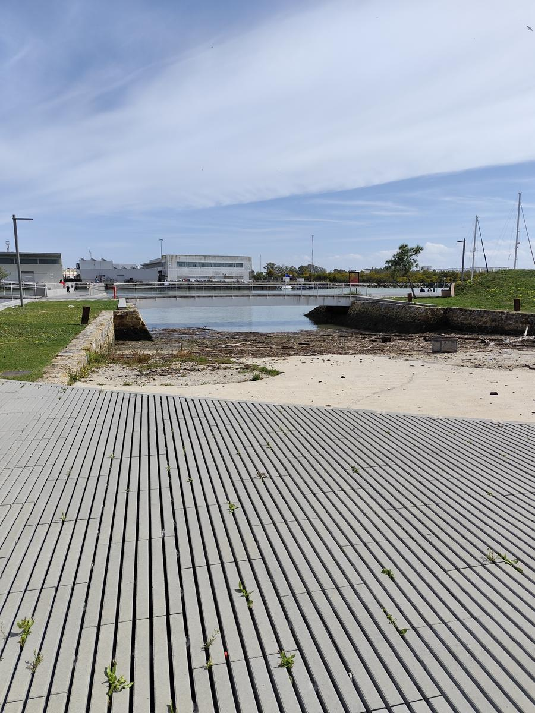
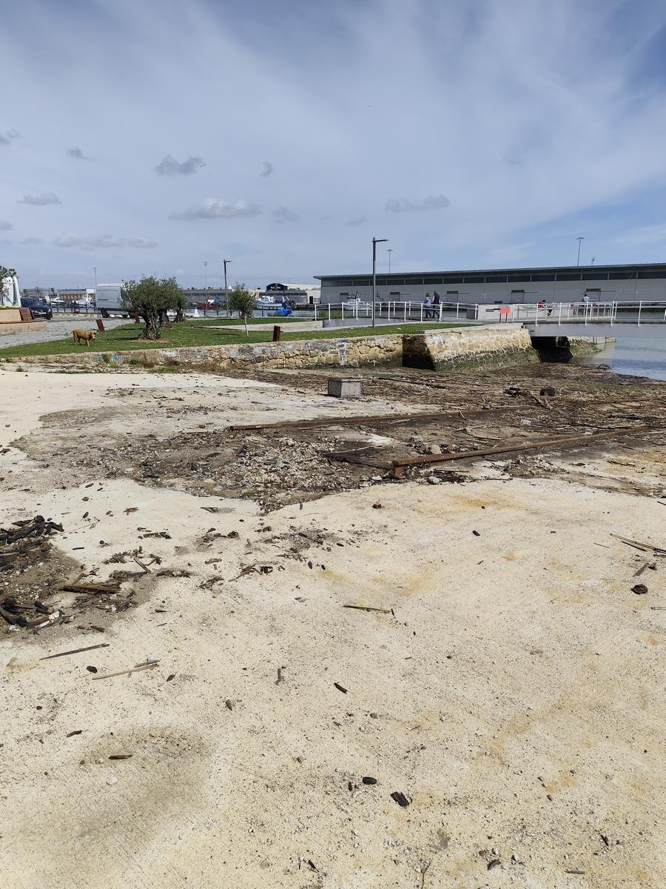
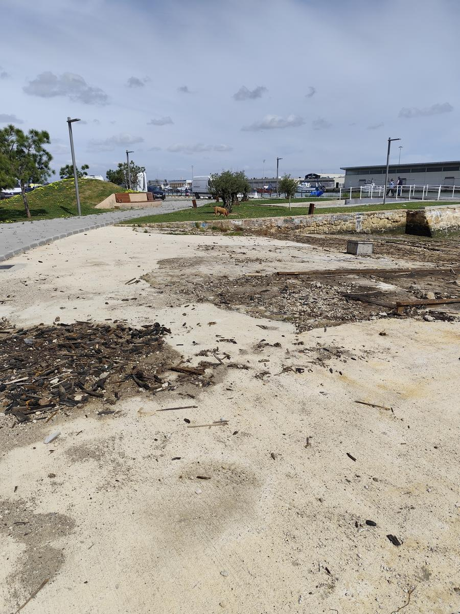
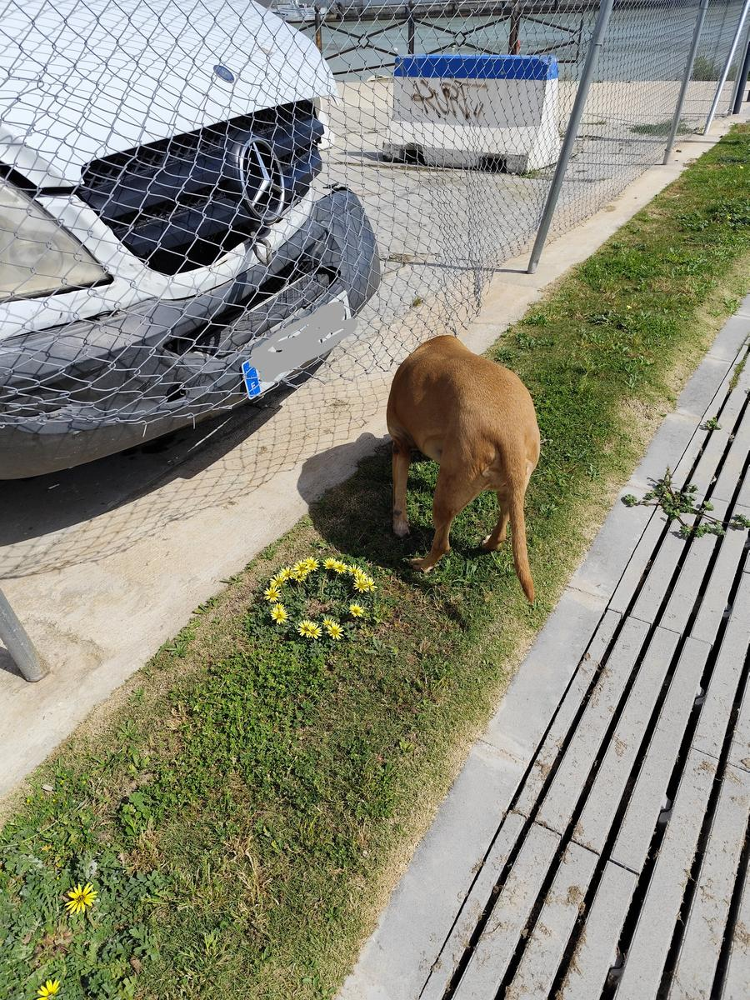

Hogares con perro · 26%~9.100 hogares
De ~35.000 hogares. 11.000–13.000 perros en El Puerto. Sin zona canina = kilómetros a pie.
El Puerto tiene ~9.000 hogares con perro y solo 2 zonas caninas dignas. La Ley 7/2023 obliga a los ayuntamientos a habilitar estos espacios. Ya lo conseguimos con la playa de El Aculadero en 2024 — ahora toca el Vaporcito.
Destinatario: D. Germán Beardo Caro, Alcalde de El Puerto. Firma en 30 segundos en Change.org.
Sin renders ni IA. Fotos del propio espacio que pedimos recuperar como zona canina vallada — con sombra, césped y fuente, como Vino Fino.




Fotos reales del sitio. No hay fotomontaje: esto es lo que hay y lo que proponemos transformar. Fuente: archivo campaña 2026.
Espacio reconocible, bien comunicado y sin uso digno. Vallado, sombra, césped y fuente — estándar municipal ya probado en Vino Fino — lo devuelve a la ciudadanía y a sus perros.
Queremos llenar la campaña de caras reales. Envía una foto de tu perro con su nombre a zonacaninavaporcito@gmail.com y lo convertimos en una historia como las de la carpeta viral — ejemplo: vídeos verticales con su nombre, su barrio y su sueño de correr libre donde estaba el Vaporcito.
Autorizas su uso en TikTok/Reels/Shorts de @zonacaninavaporcito. Si es menor el dueño, que escriba un adulto. Máx. 1 foto por perro, horizontal o vertical.
📧 Enviar foto a zonacaninavaporcito@gmail.comVer ejemplos en @zonacaninavaporcito → Carpeta viral/ con 1.mp4 y Vertical_video como referencia.
👆 Elige tu historia Desliza →
Playlist: PLISaY0oQ5et4 — portadas de cada vídeo. Invita a ver: “toca la portada para reproducir”.
“Luna, 3 años” — tu cuento queda vertical 9:16 con tu foto, nombre y barrio. Envía a zonacaninavaporcito@gmail.com.
Son números del municipio y del BOE. Sin parque cercano, la ordenanza te deja sin opción: correa <2m siempre o privar al perro de correr.
De ~35.000 hogares. 11.000–13.000 perros en El Puerto. Sin zona canina = kilómetros a pie.
Valdelagrana, Vino Fino y Toruños (periurbano). Altos del Paseo y Arboleda Perdida aún en obras.
“Los municipios habilitarán en todo caso lugares específicamente habilitados…” No es favor, es deber.
“Los municipios determinarán en todo caso lugares específicamente habilitados para el esparcimiento de animales de compañía, particularmente los de la especie canina.”Ley 7/2023, de 28 de marzo — BOE
Ordenanza: correa <2m obligatoria. Sin parque, incumples o privas al perro.
La presión funciona aquí
Petición Change.org → 9.000 m² habilitados 01-06-2024. Temporada oct–may. Mismo Ayuntamiento, misma vía.
Petición “playa para perros” supera apoyos
Habilita El Aculadero entre espigón y escollera
Turno de donde estaba el Vaporcito — mismo mecanismo
Vive en vertical: TikTok, Reels y Shorts. Esta landing es para quien duda si sirve. Sí sirve — ya sirvió.
Copia https://c.org/TBtrVxzFjv · @zonacaninavaporcito — linktr.ee/zonacaninavaporcito · zonacaninavaporcito@gmail.com
Datos ANFAAC/BOE/Ayuntamiento + fotos del propio sitio. Nada inventado; lo que falta se marca como pendiente.
Humor local + esperanza. Sin atacar. El orgullo portuense hace el resto.
Reduce conflictos, fomenta vida activa y crea vecindad. Inversión en salud y cohesión.
Porque es un espacio céntrico, reconocido por todos, sin uso digno actual y con acceso a pie. Reaprovecharlo evita expropiaciones y obras faraónicas: vallado, sombra, césped y fuente como en Vino Fino.
Sí. La Ley 7/2023, de 28 de marzo, dice que los municipios “determinarán en todo caso lugares específicamente habilitados” para esparcimiento canino. No es un favor, es cumplimiento. La ordenanza local exige correa <2m, así que sin parque no hay opción legal de soltar.
La enviás a zonacaninavaporcito@gmail.com con su nombre (y tu barrio si quieres). La usamos para crear tu cuento vertical 9:16 — ver ejemplos en viral/ — y publicarlo en @zonacaninavaporcito. Autorizas uso en redes; si el dueño es menor, escribe un adulto. Una foto por perro.
Solo 2–3 dignas: Valdelagrana, Vino Fino (2.564 m²) y Toruños (periurbano, Junta). Altos del Paseo y Arboleda Perdida siguen en obras a 2026. La mayoría de barrios quedan sin cobertura a pie.
En c.org/TBtrVxzFjv en 30 segundos, gratis. Luego comparte el link por WhatsApp/Telegram con el botón de esta web. Cada firma cuenta como presión al Ayuntamiento.